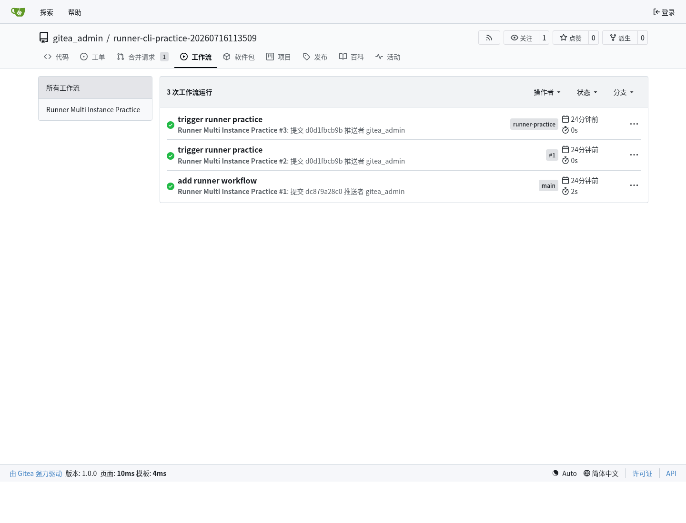
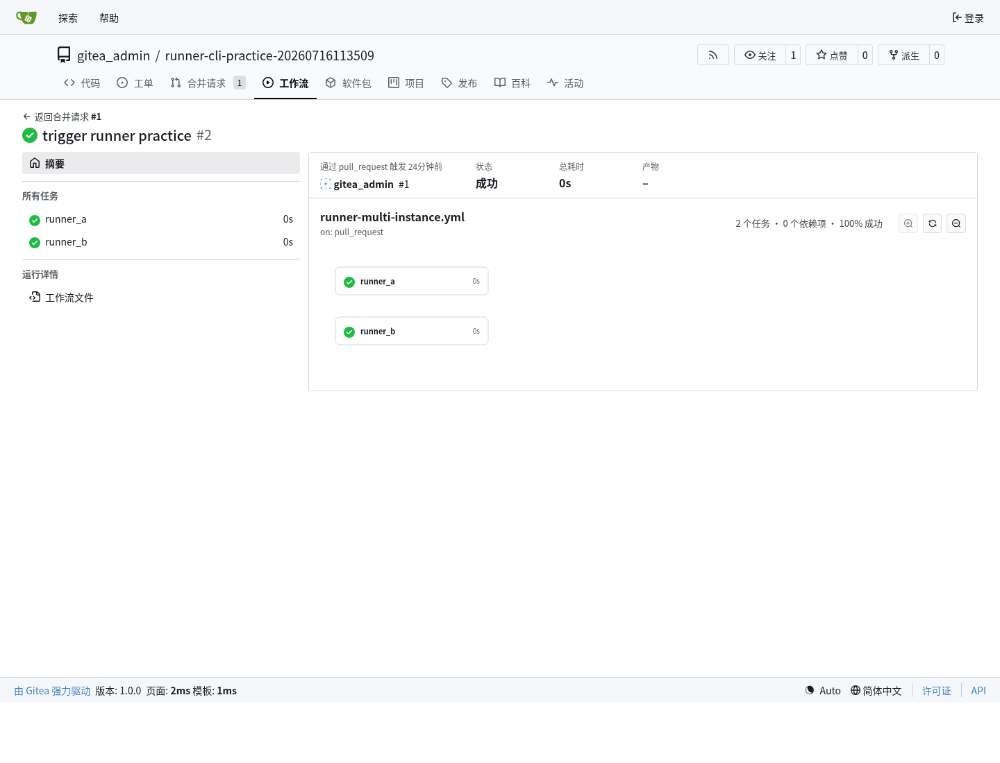
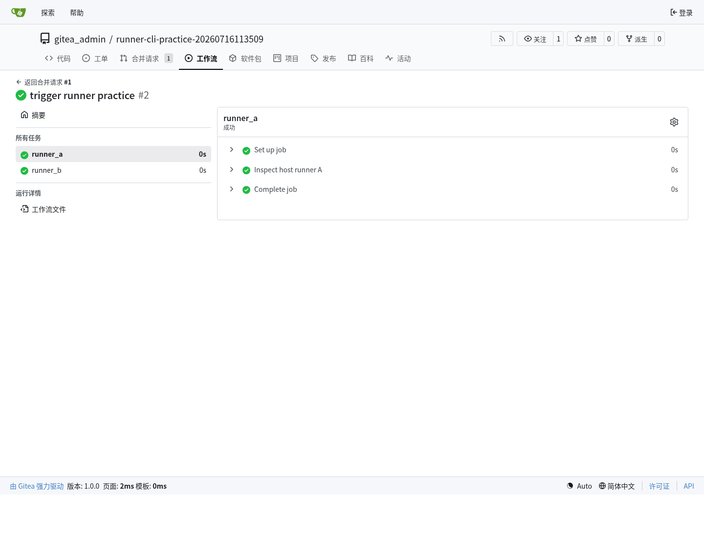
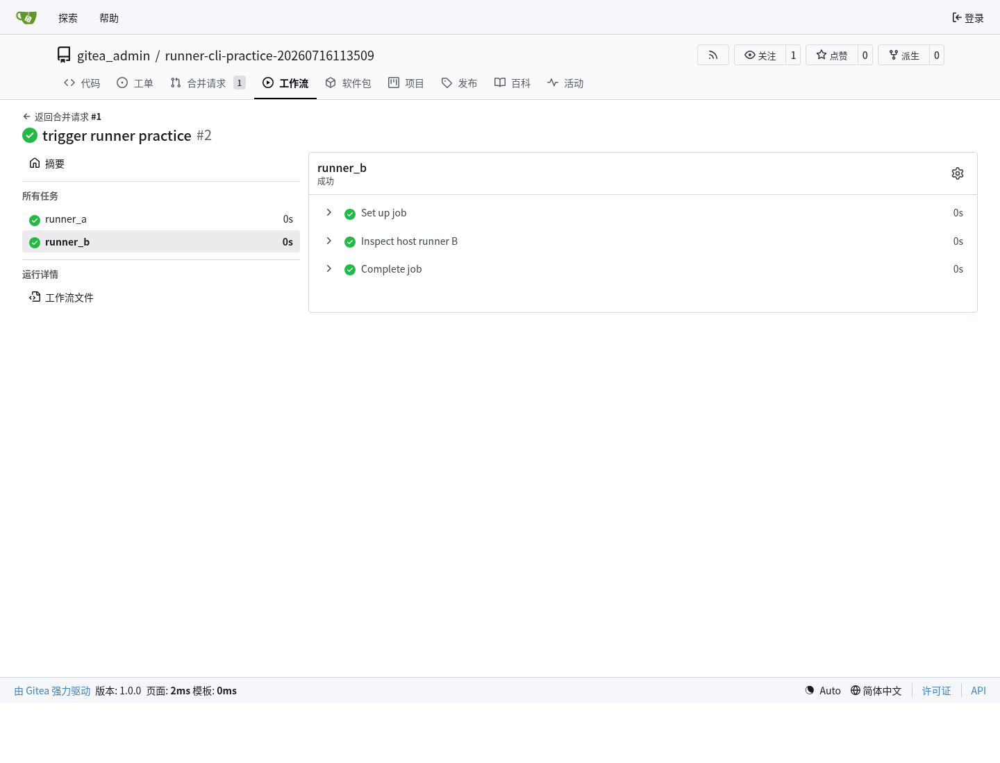
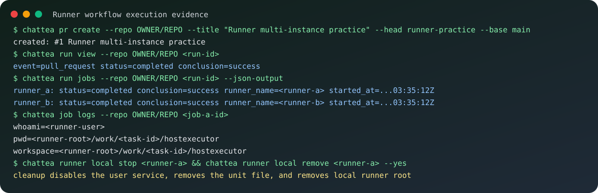

Runner 运行环境、注册和多实例维护
这篇文档专门整理 Gitea Actions Runner 的运行环境、操作空间、状态维护、注册流程和并发方式。它基于 ChatTea Runner 独立 PR 中的真实机器实践：用新 chattea runner local CLI 注册两个 repo-scope host runner，通过 PR workflow 同时触发两个 job，并用 run/job/logs 命令确认执行结果。
公开文档只保留脱敏命令和结论：真实服务 URL、机器本地路径、token、.runner 内容不会写入这里。完整实践日志保存在本地 project 记录中。Git、MySQL、Runner 和 Pages 的整体文件系统边界见 ChatTea 运行时文件系统与服务边界。
两层状态：Gitea registry 和本机 local
Runner 有两层状态，需要分开理解。
Gitea registry
├── runner id
├── runner name
├── scope: repo / user / org / admin
├── labels
├── status: online / offline
├── busy
└── disabled
Local machine
├── runner root
├── bin/gitea-runner
├── config/config.yaml
├── .runner
├── work/
└── user-level systemd service
因此 CLI 也拆成两类：
chattea runner registry ... # 管 Gitea 服务器上的 runner 记录
chattea runner local ... # 管当前机器上的 runner 文件、配置和服务
多 runner 和 workflow 辅助则分别放在 runner pool ... 和 runner workflow ...。
本机安装环境
第一版多实例约定每个 runner 有独立 root：
<chattea-home>/runners/<runner-name>/
├── bin/gitea-runner # runner binary，可从已有 binary 复制
├── config/config.yaml # runner 配置
├── .runner # 注册身份文件，敏感，不提交
└── work/ # host 后端 job 工作区父目录
对应的用户级 systemd service：
chattea-runner@<runner-name>.service
真实实践中用两个 runner：
chattea runner local register <runner-a> \
--scope repo \
--repo OWNER/REPO \
--label <runner-a> \
--backend host \
--capacity 1 \
--binary <runner-binary> \
--json-output
chattea runner local register <runner-b> \
--scope repo \
--repo OWNER/REPO \
--label <runner-b> \
--backend host \
--capacity 1 \
--binary <runner-binary> \
--json-output
chattea runner local start <runner-a>
chattea runner local start <runner-b>

Host 后端和免 Docker
本轮实践使用 host 后端，不依赖 Docker。CLI 中传入的 label 是 workflow 使用的名字：
chattea runner local register <runner-name> --label lean-native --backend host
ChatTea 写入 runner config 时会补上后端后缀：
runner:
file: .runner
capacity: 1
labels:
- "lean-native:host"
cache:
enabled: false
host:
workdir_parent: <runner-root>/work
workflow 中只写冒号前的 label：
jobs:
prove:
runs-on: lean-native
steps:
- run: echo ok
gitea-runner register 会提示命令行传入的 labels 会被 config 里的 labels 覆盖，所以 ChatTea 的做法是：先写 config.yaml，再注册 runner；注册和后续执行都以配置文件为准。
Job 的执行范围
host 后端下，job 由启动 runner daemon 的同一 Unix 用户执行。真实 job log 确认了这些点：
whoami=<runner-user>
pwd=<runner-root>/work/<task-id>/hostexecutor
workspace=<runner-root>/work/<task-id>/hostexecutor
shell=bash --noprofile --norc -e -o pipefail {0}
这意味着：
- job 工作目录在该 runner root 的
work/下面； - 每个任务会进入单独的
<task-id>/hostexecutor工作区； - workflow 生成的文件先落在这个工作区里；
- job 拥有启动 runner 的 Unix 用户权限；
- host 后端不是强安全沙箱，不能把不可信 workflow 当成隔离环境执行。
如果要跑不可信任务，需要后续单独设计隔离策略，例如独立低权限用户、容器、虚拟机或一次性工作目录清理策略。
Scope 和注册流程
Runner scope 决定 Gitea 侧哪些仓库可以使用该 runner：
| Scope | 注册命令形态 | 适用范围 |
|---|---|---|
| repo | --scope repo --repo OWNER/REPO |
只服务指定仓库 |
| user | --scope user |
服务当前用户可覆盖的仓库 |
| org | --scope org --org ORG |
服务指定组织仓库 |
| admin | --scope admin |
管理员级全局 runner |
workflow 能否选中 runner，取决于两个条件：
1. runner scope 覆盖该仓库；
2. workflow 的 runs-on 匹配 runner label。
Gitea 服务器侧可以用 registry 命令查看：
chattea runner registry list --scope repo --repo OWNER/REPO --json-output
chattea runner registry view --scope repo --repo OWNER/REPO <runner-id>
chattea runner registry disable --scope repo --repo OWNER/REPO <runner-id>
chattea runner registry enable --scope repo --repo OWNER/REPO <runner-id>
chattea runner registry delete --scope repo --repo OWNER/REPO <runner-id>
辅助命令可以列出当前 workflow 可写入 runs-on 的 labels：
chattea runner workflow labels --scope repo --repo OWNER/REPO
并发模型
并发有两个层次：
单 runner daemon:
runner.capacity 控制一个 daemon 可同时接几个 job。
多 runner instances:
多个 runner root + 多个 systemd service + 多个 labels。
本轮实践采用第二种方式：
runner count: 2
backend: host
capacity: 1 per runner daemon
workflow event: pull_request
workflow jobs: runner_a, runner_b
runs-on: <runner-a>, <runner-b>
result: both jobs completed successfully
started_at: both jobs started in the same second
也就是说，同一机器、同一 Unix 用户下，两个独立 runner service 可以并发接两个不同 job。每个 job 进入各自 runner root 下的 work/<task-id>/hostexecutor。
网页端表现位置
真实实践完成后，Gitea 网页端主要在四类页面上体现 Runner 和 Actions 结果。
第一，仓库的 工作流 tab 会出现 workflow run 列表。这里能看到 PR 触发的 run、状态和结论：

第二，进入某个 run 后，页面会显示 workflow 图和两个 job 节点。这个页面能确认两个 job 都是成功状态，并且它们来自同一个 pull_request run：

第三，进入 job 页面后，Gitea 会展示单个 job 的日志区域和运行状态。runner A 的 job 页面对应 runs-on: <runner-a>：

第四，runner B 的 job 页面对应 runs-on: <runner-b>，用于确认两个不同 label 被两个不同 runner 接走：

上面的截图是 Gitea 网页端真实页面截图；下面的 SVG 是同一轮实践的脱敏命令摘要，方便在文档里快速扫命令链。

维护命令
本机维护命令：
chattea runner local list --json-output
chattea runner local view <runner-name> --json-output
chattea runner local status <runner-name>
chattea runner local logs <runner-name> --lines 50
chattea runner local stop <runner-name>
chattea runner local remove <runner-name> --yes
local remove 的维护边界在实践中被修正过：删除本机 runner 时不能只删 unit 文件，还要先 disable user service，清理 default.target.wants 里的 symlink，然后 daemon-reload，最后删除 runner root。
配置维护命令：
chattea runner local config show <runner-name>
chattea runner local config set-labels <runner-name> --label lean-native --backend host
chattea runner local config set-capacity <runner-name> --capacity 2
chattea runner local config set-workdir <runner-name> --workdir <runner-workdir>
chattea runner local config set-backend <runner-name> --backend host
修改 config 后，应重启对应 runner：
chattea runner local restart <runner-name>
Pool 批量管理
Pool 是多个本机 runner 的薄封装，适合在同一台机器上快速创建一组并发 runner：
chattea runner pool create lean --count 2 \
--scope repo \
--repo OWNER/REPO \
--label lean-native \
--backend host \
--register \
--binary <runner-binary>
chattea runner pool start lean
chattea runner pool status lean
chattea runner pool stop lean
chattea runner pool remove lean --yes
第一版 pool 使用固定命名：
lean-1
lean-2
...
已实践命令链
本轮真实实践跑过的命令链：
chattea repo create --name <practice-repo> --public --json-output
git init -b main
git remote add origin <gitea-repo-url>.git
git push -u origin main
chattea runner local register <runner-a> --scope repo --repo OWNER/REPO --label <runner-a> --backend host --capacity 1 --binary <runner-binary> --json-output
chattea runner local register <runner-b> --scope repo --repo OWNER/REPO --label <runner-b> --backend host --capacity 1 --binary <runner-binary> --json-output
chattea runner local start <runner-a>
chattea runner local start <runner-b>
chattea runner registry list --scope repo --repo OWNER/REPO --json-output
chattea runner workflow labels --scope repo --repo OWNER/REPO
git checkout -b runner-practice
git push -u origin runner-practice
chattea pr create --repo OWNER/REPO --title "Runner multi-instance practice" --head runner-practice --base main
chattea run list --repo OWNER/REPO --json-output
chattea run view --repo OWNER/REPO <run-id>
chattea run jobs --repo OWNER/REPO <run-id> --json-output
chattea job logs --repo OWNER/REPO <job-id>
chattea runner local status <runner-a>
chattea runner local status <runner-b>
chattea runner local stop <runner-a>
chattea runner local stop <runner-b>
chattea runner registry delete --scope repo --repo OWNER/REPO <runner-id>
chattea runner local remove <runner-a> --yes
chattea runner local remove <runner-b> --yes
后续待验证
- Docker 后端的真实隔离边界；
- 用独立低权限 Unix 用户运行 runner 的权限收敛效果；
- pool
scale的删除、扩容和迁移策略； - 长时间运行后
work/的清理策略； - artifact/cache 在 host 后端下的目录和生命周期。